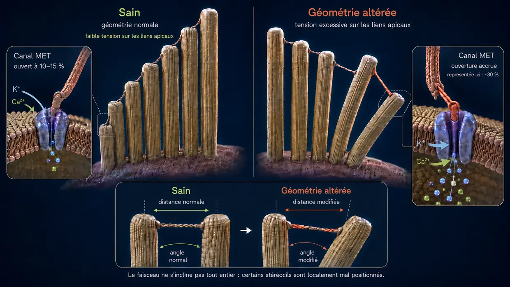
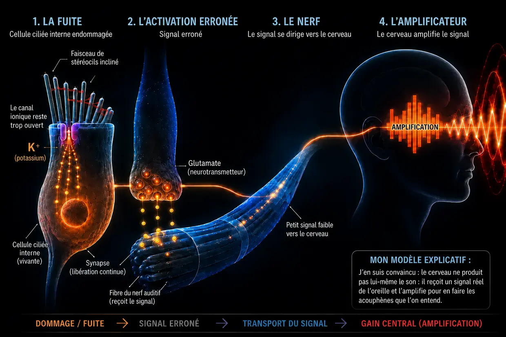

Acouphènes causés par le bruit : quand l’oreille atteint ses limites
Dernière mise à jour : août 2026
Ce qui suit, c’est ma propre explication, fondée sur des années de recherches et sur mes propres acouphènes, dont je suis venu à bout à deux reprises — pas une explication médicale de référence.
J’ai moi-même eu ces acouphènes — à deux reprises. Toute l’histoire se trouve dans ma biographie.
J’étais tellement désespéré que je m’étais juré ceci : soit les acouphènes s’en vont, soit c’est moi qui m’en vais. (Bien sûr, je ne le pensais pas vraiment comme ça, mais j’étais vraiment sous une pression immense.)
À l’époque, je percevais surtout un son fort, strident et aigu dans l’oreille gauche, accompagné d’un souffle très lointain en arrière-plan. C’était la pire chose que je pouvais alors imaginer. Dans l’oreille droite aussi, les acouphènes étaient présents dès le début, mais ils étaient extrêmement faibles et je ne pouvais les percevoir qu’au prix d’un véritable effort.
Ces « consignes » revenaient essentiellement à masquer le son par d’autres bruits — par exemple de la musique au casque à un volume plus élevé ou du bruit diffusé en permanence. En réalité, mes oreilles étaient ainsi exposées à encore davantage de stimulations sonores alors qu’elles étaient déjà totalement dépassées. Avec le recul, c’était l’une de mes plus grosses erreurs : après avoir continué à exposer mes oreilles au son sur les conseils des médecins — des conseils qui, pour moi, se sont révélés complètement erronés —, le son jusque-là extrêmement faible dans l’oreille droite est devenu presque aussi fort que dans l’oreille gauche.
Les médecins me disaient que je devais apprendre à vivre avec. Sur Internet, tout se contredisait. Six médecins ORL — et aucun ne pouvait me dire ce qui se passait réellement dans mon oreille.
Alors, je me suis mis à lire par moi-même. La nuit, sur un forum, puis avec mon ordinateur portable dans mon lit d’hôpital — des études, des témoignages, tout ce que je pouvais trouver. Peu à peu, une image qui me semblait logique s’est dessinée, et elle s’est ensuite confirmée dans ma propre oreille.
Aujourd’hui, je peux le dire : les acouphènes causés par le bruit ne sont pas un mystère. Ils sont le résultat d’une surcharge de l’oreille — et quand on comprend ce qui s’y passe, on comprend aussi pourquoi ce bruit est là et ce que l’on peut faire soi-même.
Résumé À lire en 60 secondes — l’essentiel en un coup d’œil
À un volume extrême (par exemple en boîte de nuit), les pompes n’arrivent tout simplement plus à suivre. La consommation d’énergie (ATP) explose, la cellule ne parvient plus à en produire suffisamment et bascule dans un mode de secours moins propre, qui produit de l’acide lactique et acidifie le milieu — une spirale descendante comparable à la défaillance musculaire pendant un sprint. Lorsque les pompes n’arrivent plus à suivre, le calcium s’accumule à l’intérieur des minuscules cils sensoriels. Cet excès de calcium active des enzymes de dégradation (les calpaïnes), qui dévorent la « colle » (les protéines de pontage, ou crosslinkers) entre les filaments structurels internes du cil. Sans cette colle, le cil perd sa rigidité et se déforme. Le canal ionique situé à son extrémité reste alors beaucoup trop ouvert en permanence — comme une fenêtre en position oscillo-battante. Du potassium pénètre continuellement par cette fuite permanente et maintient toute la cellule sous tension électrique constante. Cette tension ouvre d’autres canaux dans la cellule ciliée interne elle-même : du calcium s’écoule alors goutte à goutte vers la synapse et y déclenche une libération ininterrompue de glutamate en direction du nerf auditif. Le cerveau reçoit ce signal erroné, faible mais constant, constate que les signaux normaux font défaut dans cette gamme de fréquences et pousse son préamplificateur interne, le gain central, à un niveau extrême. Ce n’est qu’avec cette amplification que ce signal erroné ténu devient un son consciemment perceptible : les acouphènes.
La bonne nouvelle : tant que la cellule est vivante, elle possède le plan et la capacité nécessaires pour se réparer. Pour cela, elle a besoin d’énergie, de matériaux et de repos.
Ce qui se passe vraiment dans l’oreille : le processus physiologique normal de l’audition
Quelques mots sur les termes, afin que nous parlions bien de la même chose : dans l’oreille interne se trouvent ce que l’on appelle les cellules ciliées — les véritables cellules sensorielles de l’audition. À la surface de chacune d’elles se dresse un faisceau de minuscules prolongements en forme de doigts : les stéréocils. Selon la position de la cellule ciliée dans la cochlée, elle en porte environ 50 à 300, disposés en rangées du plus court au plus long, comme des tuyaux d’orgue. Chacun de ces stéréocils possède sa propre charpente interne constituée de protéines d’actine. Dans la vie courante comme dans la recherche, ces stéréocils sont souvent appelés simplement « petits cils » ou « cils sensoriels » — et c’est ainsi que j’emploie également le terme sur cette page. Point important : lorsque je parle de « cils », je désigne toujours les stéréocils situés sur la cellule ciliée, et non la cellule ciliée elle-même.
Normalement, l’audition fonctionne comme une réaction en chaîne d’une extrême précision :
L’impulsion : un stimulus sonore atteint les fins cils (stéréocils) des cellules ciliées et les fait fléchir sur le côté.
La traction mécanique (liens apicaux, « tip-links » en anglais) : comme les extrémités de ces cils sont reliées entre elles par ces filaments protéiques extrêmement fins, leur flexion crée une tension. Ces filaments fonctionnent comme un câble de traction mécanique : ils tirent physiquement sur le canal ionique situé à l’extrémité et l’ouvrent, un peu comme lorsque l’on tire sur le bouchon d’une baignoire.
L’entrée des ions : comme l’oreille interne est remplie d’un liquide riche en potassium, du potassium (K⁺) pénètre aussitôt dans le cil sensoriel par le canal qui vient de s’ouvrir — ainsi qu’une petite quantité de calcium.
L’activation : cette entrée de potassium modifie la tension électrique de la cellule ciliée interne (dépolarisation). Cela ouvre ensuite des canaux calciques situés plus bas dans la cellule ciliée interne elle-même — non pas dans les cils sensoriels, mais dans le corps cellulaire qui se trouve en dessous.
Le signal : seule l’entrée de ce calcium déclenche alors, dans la cellule ciliée interne, la libération des neurotransmetteurs qui transmettent le signal au cerveau par le nerf auditif.
La remise à zéro : des transporteurs spécialisés, présents aussi bien dans les cils sensoriels que dans le corps de la cellule ciliée, expulsent ensuite l’excès de potassium et de calcium à l’aide de l’ATP (énergie cellulaire) afin que la cellule puisse retrouver son calme.
Ce système est conçu pour qu’une petite alternance d’ouverture et de fermeture se produise en permanence — comme un rythme respiratoire. Le point décisif est le suivant : au repos, le canal situé à l’extrémité du cil n’est jamais complètement fermé ; il reste toujours légèrement ouvert. C’est normal et voulu, afin que la cellule puisse, à tout moment, réagir instantanément au moindre son. Tant que le cil reste droit, cette ouverture demeure minime et contrôlée. Mais si le cil reste durablement incliné sur le côté, le canal reste beaucoup trop ouvert — et c’est précisément là que le problème commence.
Une idée avant d’aborder la surcharge : quand des acouphènes chroniques apparaissent après un traumatisme sonore, beaucoup de personnes concernées pensent — et de nombreux médecins donnent aussi cette impression — que les cellules ciliées de l’oreille ont été détruites de manière irréversible et que le cerveau produit désormais le son de façon autonome, à partir de son souvenir. J’en suis convaincu : cette explication ne va pas assez loin. Car une cellule ciliée morte n’émet plus de signal — elle est muette. Justement parce que le son EST LÀ, la cellule doit encore être vivante. Les acouphènes ne sont pas le signe d’une cellule morte, mais celui d’une cellule qui lutte pour survivre. Il est tout à fait possible que certaines cellules ciliées meurent définitivement lors d’une lésion due au bruit — mais, d’après ce que j’en comprends, elles ne jouent aucun rôle dans les acouphènes, puisqu’elles n’émettent plus aucun signal. Le son vient des cellules qui sont encore là et qui luttent — et qui restent bloquées dans un état de perte de fonction énergétique.
Quand le bruit devient trop intense (ce qui se passe lors d’une soirée en boîte de nuit)
Mais si l’oreille reçoit trop de son d’un seul coup ou de manière prolongée (chronique), l’équilibre bascule et la mécanique lâche. Toutes les soirées en boîte de nuit n’y conduisent pas — mais lorsque des acouphènes dus au bruit apparaissent, je suis convaincu que le mécanisme est exactement celui-ci : trois choses qui s’emballent mutuellement : l’énergie s’épuise, la mécanique s’effondre et la chimie déborde.
- 01Effondrement énergétique
- 02Effondrement mécanique
- 03Sauvetage d’urgence et roue de hamster
Étape 1 : l’effondrement énergétique
Revenons au fonctionnement normal de l’audition : à chaque stimulus sonore, des ions pénètrent dans la cellule et doivent ensuite être expulsés par des pompes qui consomment de l’ATP. À un volume normal, tout se déroule à un rythme tranquille — la cellule pompe sans se presser et dispose d’énergie en abondance. Mais à 100 décibels en boîte de nuit, les ondes sonores frappent les cils sans interruption et avec une force brutale. Les canaux s’ouvrent d’un coup, les ions entrent en masse et les pompes n’arrivent tout simplement plus à suivre. La consommation d’énergie explose.
Les cellules ciliées brûlent alors beaucoup plus d’énergie qu’elles ne peuvent en produire. Les centrales énergétiques normales de la cellule (les mitochondries) tournent à la limite. Pour pouvoir encore assouvir cette énorme faim d’énergie, la cellule recourt à une voie énergétique de secours, plus rapide mais moins propre : la glycolyse anaérobie. Ce mode énergétique d’urgence fournit certes de l’énergie immédiatement, mais il produit comme déchet de l’acide lactique (lactate), qui acidifie le milieu cellulaire. Sous l’effet de cette acidité, les enzymes chargées de produire l’énergie deviennent de moins en moins efficaces : c’est une spirale descendante.
La comparaison avec le sport : tout le monde connaît cette sensation après une séance de musculation avec des haltères ou un sprint. Au bout d’un certain temps, le muscle commence à « brûler » (hausse du lactate), puis finit tout simplement par lâcher : c’est la défaillance musculaire classique. La même défaillance chimique se produit dans l’oreille interne, sauf qu’elle ne se ressent pas comme une douleur, mais comme une perte de fonction.
Et c’est précisément là que se cache le véritable danger : lorsque les pompes n’arrivent plus à suivre, le calcium s’accumule à l’intérieur des cils sensoriels. En petite quantité, ce calcium est normal et nécessaire. Mais en excès, il devient destructeur. L’étape 2 montre ce qu’il détruit et pourquoi les conséquences sont si graves.
Étape 2 : l’effondrement mécanique
Pour comprendre les dégâts que le calcium provoque alors, il faut connaître brièvement la structure interne d’un cil sensoriel : il se compose de centaines de filaments d’actine parallèles — on peut se les représenter comme un paquet de spaghettis crus. Ces filaments sont collés ensemble par de courts ponts protéiques, appelés protéines de pontage. Ces protéines de pontage sont les véritables ingénieurs de la structure du cil : elles maintiennent le faisceau si solidement assemblé qu’il tient tout seul, rigide comme un tube d’acier, sans consommer d’énergie. Tant que les protéines de pontage sont intactes, le cil reste droit.
La perte d’énergie de l’étape 1 déclenche alors une réaction en chaîne dévastatrice :
Les pompes sont débordées (déferlement de calcium) : comme nous l’avons vu pour l’audition normale, une petite quantité de calcium pénètre toujours dans le cil sensoriel avec le potassium. En fonctionnement normal, ce n’est pas un problème : des pompes à calcium se trouvent directement dans la membrane du cil sensoriel et évacuent aussitôt ce calcium. Mais elles aussi ont besoin d’ATP. Lors de la surcharge aiguë en boîte de nuit, l’énergie est alors très loin de suffire : les pompes sont véritablement débordées. Résultat : même les petites quantités de calcium qui ne poseraient normalement aucun problème s’accumulent désormais à l’intérieur du cil. Et c’est précisément cette concentration excessive qui déclenche le véritable effondrement structurel.
Et voici maintenant le véritable effondrement structurel : le calcium accumulé active des enzymes de dégradation particulières (appelées calpaïnes). Ces enzymes dévorent précisément les protéines de pontage que nous venons de découvrir — le mortier qui maintient le faisceau assemblé.
Une image simple permet de comprendre pourquoi les conséquences sont si dévastatrices :
Prenez un seul spaghetti cru dans la main : vous pouvez facilement le plier et le casser. Prenez maintenant cent spaghettis et collez-les ensemble avec de la colle instantanée pour former une tige compacte : vous obtenez soudain un tube rigide, presque impossible à plier. Pris séparément, les filaments sont faibles ; collés ensemble, ils sont solides.
Le cil sensoriel fonctionne exactement de cette manière : ce ne sont pas les filaments d’actine seuls qui le rendent rigide, mais leur assemblage grâce aux protéines de pontage.
Lorsque les calpaïnes dévorent cette colle, l’inverse se produit : le tube rigide redevient un ensemble de filaments isolés et lâches. Les filaments d’actine se trouvent toujours dans le stéréocil — ils sont encore là —, mais sans les liaisons qui les unissaient, ils ne tiennent plus ensemble. Le cil perd sa rigidité, non pas parce qu’un élément s’est rompu, mais parce que sa cohésion interne a disparu.
Si vous restez alors dans la boîte de nuit, la situation empire souvent encore : désormais sans protection et isolés, les différents filaments peuvent réellement se rompre au niveau de leurs points faibles sous la pression sonore persistante — comme des spaghettis isolés qui plient sous la contrainte lorsque les filaments voisins ne les soutiennent plus. Et lorsqu’un filament se rompt, la charge supportée par les filaments voisins augmente ; ils peuvent alors se rompre à leur tour, au risque de déclencher un effet de cascade.
Le résultat : privé de son soutien interne, le cil ne peut plus conserver sa position verticale : il se déforme. Pour se représenter ce que cela signifie, l’image suivante peut aider : les cils sensoriels sont disposés côte à côte en rangées, avec des hauteurs différentes, et leurs extrémités sont reliées par de fins filaments appelés liens apicaux. À l’état sain, tous les cils sont parfaitement droits. Les filaments qui les relient présentent exactement la bonne tension et, au repos, le canal n’est que très légèrement ouvert. Lorsqu’une onde sonore arrive, les cils s’inclinent brièvement, les filaments se tendent, le canal s’ouvre — puis, dès que l’onde est passée, les cils reviennent en place et tout se détend. Une alternance nette d’ouverture et de fermeture.
Imaginez maintenant que ces mêmes cils ne se tiennent plus droits, mais restent de travers — même SANS le passage de la moindre onde sonore. Les filaments qui les relient sont en permanence soumis à une tension différente de celle qui était prévue. Dans le même temps, la membrane est elle aussi déformée. Le canal reste donc déjà trop ouvert au repos. À partir de là, du potassium et du calcium pénètrent dans la cellule en permanence et sans contrôle, alors même que la musique s’est arrêtée depuis longtemps. La fuite permanente est apparue — et avec elle, le fondement des acouphènes. La cellule ciliée interne émet un signal alors qu’il n’y a aucun son, parce que la géométrie n’est plus correcte.

Chez la plupart des personnes concernées, les acouphènes apparaissent relativement peu de temps après l’exposition sonore — en quelques minutes ou quelques heures. Il existe toutefois aussi des cas où ils n’apparaissent que plusieurs heures, voire plusieurs jours plus tard. J’explique en détail dans la FAQ pourquoi ce délai peut varier et quel rôle certaines structures de l’oreille peuvent jouer.
Étape 3 : le sauvetage d’urgence — et pourquoi il ne suffit pas
La cellule détecte les dégâts et déclenche immédiatement un mécanisme de survie : des protéines de réparation particulières (comme XIRP2), déjà stockées dans le corps cellulaire comme réserve d’urgence, foncent vers les zones endommagées. Si des filaments se sont rompus, elles s’enroulent autour des points de rupture (les spaghettis de l’étape 2), comme un ruban adhésif ultrarésistant à l’échelle moléculaire. Elles empêchent ainsi les filaments de se rompre complètement et évitent que la cascade ne devienne incontrôlable. C’est la phase 1 : la stabilisation d’urgence aiguë. Ce processus est rapide (de quelques minutes à quelques heures), car XIRP2 n’a pas besoin d’être d’abord fabriquée : elle est simplement recrutée vers la zone endommagée. Le cil sensoriel survit, mais sa charpente reste molle et instable, car XIRP2 ne peut pas remplacer les protéines de pontage manquantes entre les filaments.
Il faudrait maintenant impérativement que commence la phase 2 (le remodelage actif), qui comprend deux chantiers à la fois. Premièrement, les pansements de XIRP2 devraient être remplacés par de l’actine neuve et intacte. Deuxièmement, de nouvelles protéines de pontage devraient être synthétisées et insérées entre les filaments afin de recoller le faisceau pour en faire à nouveau une tige solide. Ces deux opérations consomment énormément d’ATP et nécessitent toutes les deux des matériaux provenant du corps cellulaire. Or, les stéréocils ne possèdent pas leurs propres centrales énergétiques (mitochondries). Ils dépendent entièrement de l’énergie qui leur est fournie d’en bas, depuis le corps de la cellule ciliée. Mais c’est précisément là que, chez la plupart des adultes, le piège chronique se referme. Le chapitre suivant explique pourquoi.
-
01Effondrement énergétique
La consommation d’ATP explose et la cellule passe en mode d’urgence. L’acide lactique s’accumule et le milieu s’acidifie.
-
02Effondrement mécanique
L’excès de calcium dévore la « colle » entre les filaments du stéréocil. Le cil se déforme — la fuite apparaît.
-
03Sauvetage d’urgence et roue de hamster
XIRP2 stabilise les points de rupture. Dans l’immédiat, la cellule survit — mais l’énergie nécessaire à la véritable réparation manque.
Le piège de la roue de hamster : pourquoi la réparation reste durablement bloquée
Voici maintenant le passage décisif de l’événement aigu au problème chronique.
Dès que le bruit cesse, la récupération commence : la cellule se remet immédiatement à produire de l’ATP et les pompes retrouvent progressivement leur fonctionnement normal. L’ensemble de la régénération — élimination de l’acidité, processus de réparation et reconstitution des réserves d’énergie — s’effectue ensuite surtout avec le temps, et particulièrement pendant le sommeil. Le corps se met donc à nettoyer : l’accumulation aiguë et massive d’ions — due tant à l’exposition intense en boîte de nuit qu’à la fuite apparue entre-temps — est progressivement évacuée. Le pic extrême d’ions se résorbe en grande partie. Le taux de calcium redescend ainsi sous le seuil critique : les enzymes de dégradation (les calpaïnes) deviennent inactives et les dégâts structurels actifs cessent.
Mais alors, pourquoi l’oreille ne guérit-elle toujours pas ?
Parce que la fuite permanente reste présente. Les stéréocils demeurent inclinés, le canal ionique reste durablement beaucoup trop ouvert et les pompes doivent évacuer cet excès vingt-quatre heures sur vingt-quatre. L’image suivante permet de comprendre pourquoi c’est précisément cela qui empêche la réparation :
Le principe du toit, de la maison et de la cave
Pour comprendre ce dilemme d’un seul coup d’œil, il est utile d’imaginer la cellule ciliée comme un bâtiment alimenté par un unique compteur électrique (ATP) :
Le toit : les fins cils sensoriels (stéréocils), avec leur charpente d’actine affaiblie, restent bloqués dans le mode d’urgence de la phase 1. C’est ici, en haut, que se trouve la fuite, et c’est ici que le moteur de la réparation devrait normalement tourner. Mais au lieu de cela, les pompes du toit elles-mêmes s’emploient à évacuer sans relâche le potassium qui pénètre et, surtout, le dangereux calcium. Car si le calcium dépasse à nouveau le seuil critique ici, en haut, les enzymes de dégradation risquent de redevenir actives et d’aggraver les dégâts.
La maison : le grand corps cellulaire proprement dit — et le SEUL endroit où se trouvent les centrales énergétiques (mitochondries), qui produisent l’ATP pour toutes les parties de la cellule. À travers le toit endommagé, des ions en excès pénètrent désormais sans interruption.
La cave : ici aussi, en bas, se trouvent des pompes ioniques. Elles doivent désespérément évacuer à contre-courant le calcium qui s’est infiltré, afin d’empêcher la maison d’être complètement inondée et la cellule de mourir.
Comme les pompes du toit et celles de la cave consomment la majeure partie de l’énergie disponible rien que pour empêcher le bâtiment de se retrouver sous l’eau, la cellule n’a plus aucune ressource pour envoyer les ouvriers réparer les dégâts de la charpente d’actine. La réparation est repoussée indéfiniment. La fuite reste ouverte. Les pompes triment. La roue de hamster tourne.
De la lutte pour la survie au son : comment les acouphènes apparaissent

La fuite est là, la cellule est prisonnière de la roue de hamster. Mais comment cela devient-il un son audible ? Le potassium qui pénètre en permanence maintient toute la cellule ciliée interne sous une tension électrique constante (dépolarisée) : elle ne retrouve jamais son potentiel de repos. Cette tension permanente ouvre à son tour des canaux calciques dépendants du voltage, situés plus bas dans la cellule ciliée interne, par lesquels un peu de calcium s’écoule constamment, goutte à goutte, vers la synapse. Ce calcium déclenche une libération faible mais ininterrompue du neurotransmetteur glutamate en direction du nerf auditif. Le cerveau reçoit en permanence un signal « FEU ! » — alors qu’il n’y a aucun son — et traduit ce court-circuit chimique en bruit.
Ce que le cerveau en fait : l’amplificateur, pas la cause
Passons maintenant au cerveau. La médecine conventionnelle affirme souvent que le cerveau aurait « appris » les acouphènes et produirait désormais le son de façon totalement autonome. J’en suis convaincu : cette explication est incomplète. Le cerveau ne crée pas les acouphènes à partir de rien. Tel un processeur extrêmement complexe, il réagit au courant de fuite constant et erroné de glutamate en provenance de l’oreille.
Comme le dommage dû au bruit et les cils inclinés empêchent les véritables signaux sonores extérieurs non altérés (les fréquences normales) d’arriver, le centre auditif du cerveau entre dans une sorte de privation sensorielle. Face à cela, le cerveau réagit de façon radicale, par un mécanisme de protection issu de l’évolution : il pousse à l’extrême le préamplificateur correspondant précisément à ces fréquences manquantes — ce que l’on appelle le « gain central ». Dans la nature, c’était vital pour pouvoir encore entendre le pas d’un prédateur qui s’approchait furtivement malgré une lésion de l’oreille. Le cerveau prend donc le courant de fuite, en réalité faible, des cellules ciliées internes endommagées et l’envoie dans un égaliseur gigantesque. Il amplifie le signal jusqu’à en faire la sirène assourdissante que nous percevons consciemment comme des acouphènes.
Le piège dévastateur du masquage : pourquoi utiliser des applications qui diffusent un bruit de fond est la pire chose à faire
Le masquage brûle l’unique fenêtre de réparation dont votre oreille dispose encore.
D’après mon expérience, c’est ici que se trouve l’erreur la plus grave commise par les personnes concernées — sur les conseils de médecins. La recommandation classique est la suivante : « Masquez le son avec du bruit blanc, des sons de la nature ou de la musique à faible volume. » Cela paraît logique à première vue et procure effectivement un soulagement à court terme. Mais d’après ce que j’en comprends, c’est un désastre sur le plan biochimique.
Il faut bien comprendre une chose : les cils sont encore vivants et actifs, mais ils sont inclinés. La cellule essaie en réalité de profiter de chaque phase de repos (surtout pendant le sommeil) pour réparer la structure avec le peu d’énergie qui lui reste et se redresser.
Mais si l’on continue à soumettre artificiellement les oreilles à des sons, on force les stéréocils endommagés à repasser en mode actif. Ils doivent de nouveau réagir au son et pomper des ions. Ils consomment alors précisément l’énergie qu’ils avaient économisée pour la phase 2 — la véritable réparation. Et il y a un deuxième problème : chaque onde sonore fait glisser les filaments d’actine les uns contre les autres dans le faisceau endommagé. Les protéines de pontage tout juste mises en place sont de nouveau délogées par ce mouvement constant avant de pouvoir se fixer correctement — comme un barreau que l’on essaierait d’insérer dans une échelle pendant que quelqu’un la secoue.
Dans l’image du toit, de la maison et de la cave, la stimulation sonore artificielle fouette mécaniquement un toit déjà ramolli. La fuite reste beaucoup trop ouverte. Les pompes de la cave doivent fonctionner 24 heures par jour à leur limite absolue. Il ne reste absolument aucune énergie pour les ouvriers sur le toit.
Cela explique un phénomène que j’ai moi-même vécu et que rapportent d’innombrables personnes concernées : la nuit, on masque les acouphènes avec du bruit et l’on se sent mieux sur le moment, mais le lendemain matin, ils sont plus agressifs et plus forts que la veille au soir. La raison : la cellule a sacrifié toute sa nuit de travail — son unique fenêtre de réparation — au traitement du son artificiel.
Je tiens à être honnête sur un point : je comprends parfaitement pourquoi certaines personnes parviennent à bien vivre avec le masquage. Lorsque les acouphènes plongent quelqu’un dans un gouffre psychologique et rendent le sommeil impossible, les masquer à court terme peut littéralement sauver une vie — et je ne veux en dissuader personne dans cette situation. Mais pour la véritable régénération — c’est-à-dire pour que les acouphènes disparaissent réellement —, le masquage est, d’après ce que je comprends, contre-productif. C’est cette différence que je tiens à souligner.
L’espoir : pourquoi une réparation est possible
Malgré tous ces mécanismes, il existe une lueur d’espoir décisive : puisque le noyau cellulaire est intact et que la structure de base en actine est toujours présente, la cellule peut réparer cette charpente. Dans les stéréocils, l’actine se renouvelle activement : les filaments d’actine sont continuellement démontés puis reconstruits. La cellule renouvelle donc sans cesse sa propre structure. Concrètement, la phase 2 signifie que les pansements de XIRP2 présents aux points de rupture des filaments sont remplacés par de l’actine neuve et que de nouvelles protéines de pontage sont insérées entre les filaments jusqu’à ce que le faisceau redevienne solide et rigide. La question n’est pas de savoir si la cellule peut réparer la structure, mais de savoir si, dans ces conditions, elle dispose de suffisamment d’énergie et de matériaux — et si on lui accorde le repos dont elle a besoin pour le faire.
Même si la charpente interne de soutien s’était fortement effondrée, cela ne constituerait pas un verdict définitif. Tant que la cellule est vivante, elle possède le plan et la capacité nécessaires pour reconstruire cette charpente — dès qu’elle dispose de nouveau de suffisamment d’énergie (ATP) et de matériaux, et que le stress chimique cesse.
Fait intéressant, ce principe — l’augmentation de l’énergie cellulaire (ATP) — est également étudié dans la recherche pharmaceutique, ce qui soutient mon modèle explicatif (même si l’effet ATP/ROS n’a jusqu’ici été montré qu’en culture cellulaire). Le médicament AC102 cible précisément ce mécanisme : dans un modèle animal chez la gerbille de Mongolie, un comportement de type acouphène a presque entièrement régressé au cours des cinq semaines suivant une seule dose d’AC102 — à la fin, 1 animal sur 15 seulement était encore concerné, contre une grande partie du groupe placebo —, mesuré par le réflexe de sursaut GPIAS, un corrélat comportemental reconnu des acouphènes. Chez l’être humain, une étude clinique de phase 2 est actuellement en cours, avec des résultats attendus en 2026 (état des recherches sur l’AC102 — voir ma page des sources →). La thérapie laser de faible intensité (photobiomodulation) vise elle aussi cette approche énergétique fondamentale.
La conclusion
Voici ce qu’est réellement, sur le plan physiologique et selon ma conviction, l’acouphène chronique causé par le bruit : une cellule vivante, bloquée dans un mode d’urgence énergétique, dont la réparation reste en grande partie figée en phase 1 parce que l’énergie nécessaire à la phase 2 manque. L’oreille n’est pas « cassée » et le cerveau n’invente pas un signal fantôme. Le son est le résultat d’une véritable lutte périphérique pour la survie, que le cerveau ne fait qu’amplifier.
Le fait que le son persiste ou non dépend d’une seule chose : de l’aide apportée — ou non — aux cellules pour refermer la fuite et redonner aux pompes l’énergie nécessaire afin que le cil puisse se redresser.
Que faire maintenant contre les acouphènes causés par le bruit ?
Même si les mécanismes sont complexes, il existe trois leviers centraux qu’il est important de comprendre tout de suite. Sur ma page consacrée à ma démarche pour en sortir, j’explique en détail à quoi ils correspondent concrètement et comment ils m’ont aidé à l’époque, à deux reprises, à me débarrasser de mes acouphènes, jusqu’à leur disparition complète.
Toute l’histoire en une seule chaîne
Boîte de nuit. Les pompes n’arrivent plus à suivre, l’énergie s’épuise, la cellule passe en mode d’urgence et s’acidifie. Le calcium s’accumule dans les cils et active des enzymes qui dévorent la colle entre les filaments. Le cil ramollit et s’incline. Le canal situé à son extrémité reste trop ouvert en permanence — une fuite. Du potassium pénètre continuellement par cette fuite, la cellule reste sous tension permanente et envoie un signal au nerf auditif en l’absence de tout son. Le cerveau augmente l’amplification. Voilà le son.
Après la soirée en boîte de nuit, l’énergie revient certes — mais les pompes la consomment uniquement pour gérer la fuite. Il ne reste rien pour produire de la nouvelle colle et redresser le cil. Roue de hamster. D’après mon expérience, le fait que le son disparaisse ou non dépend de trois choses : la quantité de colle détruite, le fait que l’oreille soit laissée au repos ou continue d’être exposée au son, et le fait que la cellule reçoive de l’énergie et des matériaux. Tant qu’elle est vivante, elle peut se réparer.
Questions complémentaires et FAQ
Pour celles et ceux qui souhaitent aller plus loin : dans la rubrique FAQ, j’aborderai d’autres sujets autour des acouphènes causés par le bruit — par exemple pourquoi leur intensité peut fluctuer, pourquoi ils s’atténuent brièvement lorsqu’on les masque et pourquoi ils redeviennent plus forts peu après. Je construis actuellement cette page étape par étape.
Remarque importante
En cas d’acouphènes ou de problèmes auditifs, en particulier s’ils sont apparus de façon aiguë, consultez un médecin ORL afin de faire examiner d’éventuelles causes organiques. Les contenus, modèles explicatifs et approches présentés sur ce site ne constituent pas un avis médical : ils reflètent mon expérience personnelle et mes propres recherches. Chaque corps est différent. Je ne suis pas médecin et ne promets aucune guérison. La mise en œuvre des démarches décrites ici se fait sous votre propre responsabilité.